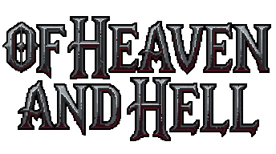

Quickband
Angband cut down to a quick game: fewer, denser levels, better loot and faster levelling. Built so a full run from town to the final boss fits into days instead of months.
> Enter the dungeon
TinyAngband
Made by the XAngband team as a compact alternative to the sprawling Zangband family: a world map with several towns and dungeons, and a quest count you choose at birth.
> Enter the dungeon
ToME 2
The Tales of Middle-earth: a whole map of Middle-earth to roam, dozens of themed dungeons, gods to follow and a skill system that lets any class grow its own way. Also includes the Theme module.
> Enter the dungeon
Rogue PC
The Epyx IBM PC edition of Rogue, in its original colours and CP437 symbols or with tiles: 26 levels down to the Amulet of Yendor, and back up again.
> Enter the dungeon
XRogue
The last of the Advanced Rogue line: nine classes with their own magic, trading posts and wilderness, and a quest relic deep in the dungeon that you must carry back to the surface.
> Enter the dungeon
Umoria
The ancestor of Angband: one town, fifty levels of dungeon and the Balrog waiting at the bottom. Simple, harsh and still fair after forty years.
> Enter the dungeon
Of Heaven and Hell
Diablo, rebuilt as a turn-based roguelike: a Go reimplementation that follows the original game's rules and data as closely as possible.
> Enter the dungeon